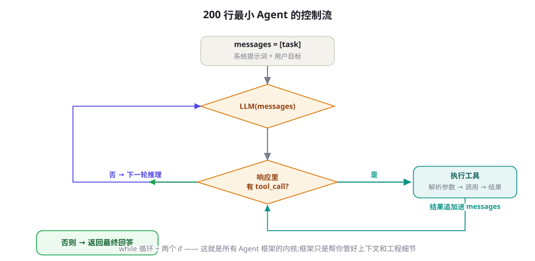

从零手写最小 Agent：200 行 Python 的完整实现
本章是全书的「 muscle memory 」章：不依赖任何框架，用标准库加一个 SDK 写出具备工具循环、记忆、反思与安全刹车的完整 Agent。写完它，你读任何框架的源码都如在自家客厅行走——这也是本章被排在框架篇最前面的原因。
设计目标：200 行里必须装下什么
动手前先明确边界。这个最小 Agent 要覆盖第 2 部分学到的核心机制，同时保持「一个文件能读完」：
- 工具循环（第 15-17 章）：LLM 决策 → 执行工具 → 观察回填，直到任务完成或触发刹车。
- 双刹车（第 15 章）：步数上限 + 成本上限，超限优雅退出而非崩溃。
- 工具注册表：用装饰器注册工具，Schema 自动生成——体会「工具描述是给模型的文档」。
- 轻记忆（第 19 章）：核心区常驻 + 每轮预算核算。
- 反思钩子（第 22 章）：失败后一次自我批评，改进下一步。
- 审计日志（第 79 章）：每步落 JSONL，可回放。
明确不做的：并行执行、流式输出、人工审批、持久化检查点——它们是生产化课题（第 25、80 章），塞进来会毁掉「可读性」这个首要目标。每一处省略都标注了通往的章节。

完整实现
"""mini_agent.py — 无框架最小 Agent(第 27 章)
依赖: pip install openai ; 环境变量 OPENAI_API_KEY
运行: python mini_agent.py "搜索关于大语言模型的最新进展并总结三点"
"""
import json, os, sys, time
from openai import OpenAI
client = OpenAI()
MODEL = "gpt-4o-mini"
MAX_STEPS, MAX_COST_USD = 15, 0.50 # 双刹车(15.3)
# ---------- 工具注册表: 装饰器自动生成 Schema ----------
TOOLS = {}
def tool(description: str):
"""把函数注册为工具;类型注解转 JSON Schema"""
def deco(fn):
hints = fn.__annotations__
props, required = {}, []
for name, typ in hints.items():
if name == "return":
continue
json_type = {str: "string", int: "integer",
float: "number", bool: "boolean"}.get(typ, "string")
props[name] = {"type": json_type,
"description": f"参数 {name}"}
if typ is not str or name != "self":
required.append(name) # 简化:全部必填,生产中应更细
TOOLS[fn.__name__] = {
"fn": fn,
"schema": {"type": "function", "function": {
"name": fn.__name__,
"description": description,
"parameters": {"type": "object",
"properties": props,
"required": required}}},
}
return fn
return deco
# ---------- 三个示例工具 ----------
@tool("按关键词搜索维基百科,返回词条摘要列表")
def wiki_search(keyword: str):
import requests
r = requests.get("https://zh.wikipedia.org/w/api.php", params={
"action": "query", "list": "search", "srsearch": keyword,
"format": "json", "srlimit": 3}, timeout=10).json()
hits = r.get("query", {}).get("search", [])
return [{"title": h["title"], "snippet": h["snippet"]
.replace('<span class="searchmatch">', "")
.replace("</span>", "")} for h in hits] or "无结果"
@tool("获取指定词条的正文前 800 字")
def wiki_page(title: str):
import requests
r = requests.get("https://zh.wikipedia.org/w/api.php", params={
"action": "query", "prop": "extracts", "exintro": 1,
"explaintext": 1, "titles": title,
"format": "json"}, timeout=10).json()
for p in r.get("query", {}).get("pages", {}).values():
return (p.get("extract") or "无内容")[:800]
return "词条不存在"
@tool("把中间结论写入笔记本,防止后续遗忘(轻记忆,19章)")
def take_note(content: str):
with open("notes.md", "a", encoding="utf-8") as f:
f.write(f"- [{time.strftime('%H:%M')}] {content}\n")
return "已记录"
# ---------- Agent 循环 ----------
SYSTEM = """你是一个严谨的研究助手。规则:
1. 每步先用一行『计划:』简述当前策略,再决定调用工具。
2. 同一查询失败两次后,必须换思路或求助用户,禁止第三次原样重试。
3. 重要中间结论立即调用 take_note 保存。
4. 信息足够时直接给出带来源的最终回答,不要为用工具而用工具。"""
def run(task: str, reflect: bool = True) -> str:
messages = [{"role": "system", "content": SYSTEM},
{"role": "user", "content": task}]
cost, failures = 0.0, {} # 成本累计 + 失败计数(反思用)
log = open("trace.jsonl", "a", encoding="utf-8")
for step in range(1, MAX_STEPS + 1):
resp = client.chat.completions.create(
model=MODEL, messages=messages,
tools=[t["schema"] for t in TOOLS.values()])
msg = resp.choices[0].message
usage = resp.usage
cost += (usage.prompt_tokens * 0.15 +
usage.completion_tokens * 0.6) / 1e6 # 粗略计价
log.write(json.dumps({"step": step, "cost": round(cost, 4),
"content": msg.content,
"tool_calls": [t.function.name
for t in (msg.tool_calls or [])]},
ensure_ascii=False) + "\n")
if not msg.tool_calls: # 模型选择直接回答 = 完成
log.close()
return msg.content
if cost > MAX_COST_USD:
return f"[已达成本上限 ${MAX_COST_USD},停止。已完成部分见 notes.md]"
messages.append(msg)
for tc in msg.tool_calls:
entry = TOOLS.get(tc.function.name)
if entry is None: # 幻觉工具(17章失败清单)
out = f"工具 {tc.function.name} 不存在。可用: {list(TOOLS)}"
else:
try:
out = json.dumps(entry["fn"](
**json.loads(tc.function.arguments)),
ensure_ascii=False)
failures.pop(tc.function.name, None)
except Exception as e: # 工具异常 → 可行动错误(17章)
failures[tc.function.name] = failures.get(
tc.function.name, 0) + 1
out = json.dumps({"error": str(e),
"hint": "检查参数后重试或换方法",
"retryable": True}, ensure_ascii=False)
messages.append({"role": "tool", "tool_call_id": tc.id,
"content": out[:4000]}) # 大结果截断(23章)
if reflect and any(v >= 2 for v in failures.values()):
# 一次自我批评(22章):把失败史摊开让模型反省
messages.append({"role": "user", "content":
f"[系统] 工具连续失败: {failures}。"
"请先用一行反思失败原因,再决定下一步。"})
log.close()
return "[步数上限,任务未完成。笔记见 notes.md]"
if __name__ == "__main__":
task = sys.argv[1] if len(sys.argv) > 1 else "总结大语言模型的发展历程"
print(run(task))数一数：连注释约 180 行。逐块对照机制篇——装饰器注册表（17 章）、双刹车（15 章）、可行动错误（17 章）、轻记忆工具（19 章）、反思钩子（22 章）、审计日志（79 章）、大结果截断（23 章）——你已经用一个文件实现了本书前半部的全部骨架。下面做三件让它「属于你」的事。
| 机制 | 代码位置（函数/行） | 机制篇出处 | 生产化去向 |
|---|---|---|---|
| 工具注册与 Schema 生成 | tool() 装饰器 | 第 17 章 | Pydantic 校验 / MCP Server |
| 主循环与终止 | run() for 循环 | 第 15 章 | 异步化 + 队列（第 80 章） |
| 双刹车 | MAX_STEPS / MAX_COST_USD | 第 15 章 | 预算中心 + 熔断 |
| 可行动错误 | except 分支的 hint 字段 | 第 17 章 | 错误码体系 |
| 轻记忆 | take_note 工具 | 第 19 章 | 记忆服务（Mem0 等） |
| 反思钩子 | failures 计数触发 | 第 22 章 | Reflexion 完整版 |
| 审计日志 | trace.jsonl | 第 79 章 | OTel + Langfuse |
代码走读：五条容易忽略的细节
这段短代码里有五处「看起来随意、实则讲究」的写法，值得点名。① 失败计数在成功时清除（failures.pop）——反思应该针对「当前连续失败」，历史上偶尔失败过不该触发；这是把第 22 章的反思边界原则写成了三行代码。② 工具结果截断在回填处（out[:4000]）而非工具内部——截断策略属于「上下文预算」（第 23 章），集中在循环层管理才能全局优化；工具内部只负责「声明自己可能很大」。③ 幻觉工具不抛异常而是返回可用清单——错误信息即导航（第 17 章），模型下一步就会自我纠正。④ 系统提示词要求「先写计划行」——一行字的强制外化，是 Thinking 的最小形态，成本几乎为零却显著改善长任务的漂移。⑤ 日志在每步落盘而非结束时一次性写——进程被杀时你保住了此前全部轨迹。这五处合起来约 15 行代码，却决定了这个 Agent 是「能演示」还是「能日常用」。
扩展时的四个典型误区
在这个骨架上继续开发时，有四个高频误区提前预警。误区一：往系统提示词里堆规则。改不好的行为就想加一条规则，十次之后系统提示词变成无人能懂的法典，规则之间互相打架。正确姿势：新规则先问「这是不是该由工具/代码保证的」——能用确定性代码约束的（格式、范围、权限）绝不用提示词祈祷。误区二：把业务逻辑写进循环体。循环应该只有机制（调用、解析、刹车），业务逻辑全部在工具函数与系统提示词里——这样换模型、换循环实现都不动业务。误区三：全局变量做状态。failures、cost 这类状态在单次运行没问题，加多用户/并发时就是灾难；从第一天就用一个 RunState 数据类装它们（练习三的检查点会强迫你做这件事）。误区四：直接在工具里 print。工具的输出应该只有返回值；诊断信息走日志。 print 会污染流式输出、混进审计、在服务化后消失——用 logging 从第一天开始。
升级故事：一个真实项目从 mini 到生产的一年
匿名化的真实时间线，展示这份代码如何长成生产系统（每个阶段的触发点比内容更值得学习）。第 1-2 周：就是本章的文件，接上内部 API 当工具，团队自用，每天修工具描述。第 3 个月：触发了第一次「进程重启丢上下文」事故——用户提出复杂任务后服务部署重启。引入检查点（练习三），顺手把循环改成异步。第 5 个月：多人使用后成本失控（有人在跑 50 步的循环刷题），上线 LLM 网关：统一计价、按用户配额、加语义缓存，成本降六成。第 7 个月：一次模型厂商静默更新后成功率骤降两成——因为评测集当晚就发现了（此前第 2 个月埋的 nightly 评测），两天内完成备选模型切换。这一刻团队真正理解了「评测先行」。第 10 个月：加入人审队列（第 25 章），覆盖高风险工具；干预率从 40% 降到 12%。第 12 个月：回头看，原始的 200 行里循环骨架几乎没变——变的是外围：网关、检查点、评测、审批。教训浓缩成一句话：机制先于工程，工程围绕机制生长；反过来做（先搭「企业级架构」再塞机制）的团队，我们在同级目录里见过不止一个。
延迟解剖：用户在等什么
把一次五步任务的总延迟拆开（量级参考，本地网络环境实测会浮动）。典型构成：模型推理 60%~75%（五次调用的串行总和，每步 1~3 秒；这是「循环即延迟」的物理规律——并行工具能把工具时间压扁，但推理轮次压不掉，除非用第 17 章的并行调用合并轮次）；工具执行 15%~30%（网络请求为主，维基搜索类 0.5~2 秒/次）；本地开销 <5%（解析、日志、序列化）。三条由此得出的优化铁律：铁律一：减少轮次比加速单轮更有效——让模型一次并行发多个调用，五轮变三轮，总延迟立省四成；铁律二：给用户「过程可见性」比优化尾部更划算——流式输出每步的计划与工具状态，等待的心理成本骤降（这也解释了为什么 Deep Research 类产品都展示进度）；铁律三：测量先行——在日志里加 time.perf_counter() 只需五行，没有分步延迟数据的一切优化都是猜。第 78 章会把这些铁律升级为完整的成本-延迟-质量三角模型。
三个递进练习
练习一（热身）：换工具集。把三个维基工具换成你所在领域的真实工具（内部 API、数据库查询、文件读写、消息推送等），跑十个真实任务，记录成功率与失败模式。你会第一次直观感受到「工具描述质量」对成功率的杠杆作用。
练习二（进阶）：加人工审批。给注册表加一个 risk_level 参数，L2 工具执行前打印预览并 input() 等确认——第 25 章的最小落地包就实现了。再故意让它调用一个危险工具，观察自己会不会无脑回车（那是审批疲劳的疫苗）。
练习三（毕业）：加检查点。每步结束后把 messages 序列化到 JSON 文件；进程重启时若发现存档，询问是否续跑。做完这个，你实现了 LangGraph checkpointer 的最小等价物——第 28 章读框架时，你会确切知道它在替你做什么。
这张清单是第 80/89 章的预告：并发与队列（多任务并行时循环要异步化）、流式输出（用户体验）、持久化检查点（本页练习三的工业版）、幂等与重试（工具层）、LLM 网关（成本与降级）、评测接入 CI（每次改提示词自动跑回归）、权限系统（多用户）。每一条在后续章节都有完整展开——但请先把这个文件跑顺，机制直觉是所有工程决策的流通货币——这句提醒对每个背景的读者都同样成立。
测试你的 Agent：三个层次的冒烟方案
不要等评测体系（第 13、50 章）建好才开始测试。当天就能做的三层次冒烟：层次一：单元层（测工具）——每个工具函数三五个断言用例（正常/边界/异常），纯 Python 测试，与 Agent 无关。层次二：契约层（测协议）——用固定的假模型响应（mock client.chat.completions.create），断言循环的解析、刹车与日志行为正确：故意让它输出不存在的工具、超预算的调用、格式坏掉的结果，验证每一处防御都在。层次三：端到端冒烟（测整体）——挑 5 个「金标准任务」每晚真跑，记录成功率与成本，任何改动（提示词、模型版本、工具）后手动跑一遍。层次二的价值最容易被低估：它把「循环逻辑 bug」与「模型能力问题」彻底分开——前者是你的错，后者是选型问题，混在一起永远修不清。
class FakeClient:
"""永远返回同一个工具调用的假模型 → 应触发步数刹车"""
class msg:
content = None
tool_calls = [] # 省略构造细节,返回一个固定调用
class choices:
message = msg
def __init__(self):
from types import SimpleNamespace
self._resp = SimpleNamespace(choices=[SimpleNamespace(
message=SimpleNamespace(content=None, tool_calls=[_fake_call()]),
usage=SimpleNamespace(prompt_tokens=100, completion_tokens=50))])
def chat(self): return self
def test_max_steps_brake(monkeypatch):
import mini_agent
monkeypatch.setattr(mini_agent, "client", FakeClient())
result = mini_agent.run("测试任务", reflect=False)
assert "步数上限" in result # 刹车生效而非死循环预习：这份代码与 LangGraph 的对照
下一章将深入 LangGraph。带着本章的坐标去读，你会发现惊人的对应关系：本章的 run() 循环 ↔ LangGraph 的图执行引擎；本章的 messages 列表 ↔ Graph State（LangGraph 把状态显式化为带 Schema 的字典，从而支持分支与并行）；练习三的检查点 ↔ Checkpointer（SQLite/Postgres 后端）；本章缺失的「按条件走不同路」 ↔ 条件边（conditional edges）——这是 LangGraph 最大的增量：当你的流程不再是「一个循环走到底」而是有分支、子图、人工中断时，手写循环的可读性开始崩塌，图的声明式表达开始赚钱。反过来，如果你的任务就是一条循环，LangGraph 是过度设计。判断式：流程图在纸上画得出来且有分支/回路 → 用图框架；流程就是「重复直到完成」一条道——那么本章的循环就是不可替代的最优解。
三个高频疑问
Q：为什么用 OpenAI SDK 而不是纯 requests？教学取舍。纯 HTTP 能展示协议细节（第 17 章时序图），但会额外增加 60 行样板，淹没「循环」这个主角。生产中两者皆可；若要跨厂商，在网关层抽象（第 26 章）比在业务代码里抽象干净得多。
Q：200 行太紧凑了，团队协作要不要拆模块？要，但按「职责」拆而非按「行数」拆。健康的拆法：tools/（工具函数与注册）、agent.py（循环与刹车）、state.py（运行状态）、io.py（日志与检查点）。四个文件，每个职责单一——比按层套娃娃的架构更利于理解。
Q：可以直接把这个当生产起点吗？可以作为「内部工具/原型」的起点（加上练习二、三之后），但对外服务前请过完第 80 章的清单：并发模型、队列、幂等、鉴权、限流。第 89 章有完整的部署方案。别让「它能跑」骗过你——「跑得顺」与「活得久」之间隔着整整两章的距离。「它能在三体问题般的真实流量下活下来」是另一门学问。
五张值得完成的改进工单
把「下一步做什么」写成可勾选的工单卡，按投入产出排序。每张卡标注了对应章节，做完一张就向生产靠近一格。
| 工单 | 做什么 | 验收 | 参考 |
|---|---|---|---|
| ① 工具校验 | 用 Pydantic 模型定义参数，替换手工 Schema 生成 | 非法参数在进入函数前被拦截并返回可行动错误 | 第 8、17 章 |
| ② 异步化 | 循环改 async，工具支持并发执行 | 三个独立查询的总延迟 ≈ 最慢者 | 第 17 章 |
| ③ 检查点 | 状态 JSON 落盘 + 续跑（练习三） | kill 进程后能从断点恢复 | 第 25 章 |
| ④ 流式输出 | 流式渲染模型文本 + 每步工具状态事件 | 用户首字节可见 <2 秒 | 第 12 章 |
| ⑤ 评测接入 | 10 条金标准任务 + 每晚跑 + 指标落库 | 改提示词后 5 分钟内看到成功率对比 | 第 13、56 章 |
本章把重试判断交给两处：模型的系统提示词（「同一查询失败两次必须换思路」）与代码的 failures 计数。为什么双保险？因为两者的失效模式不同：模型的自控是软约束——上下文变长后模型会「忘记」自己失败过几次（注意力稀释，第 23 章）；代码计数是硬约束但不懂语义——不知道「换了思路」没有。两者相乘才可靠：代码检测到「同名工具连续失败 ≥2」，就把这个事实喂给模型，由模型做语义决策（换思路或求助）。「硬约束出事实、软约束出决策」这个分工，是贯穿全书失败处理设计的元模式——第 22 章的反思、第 45 章的奖励塑形，都能看到它的影子。
再读一遍代码：用评审者的眼光
完成练习后，做一次自我 code review——用评审者（而非作者）的挑剔眼光重读，找隐患。给你一份「问题清单」当索引，每条都能在代码里找到对应位置：① cost 计价用的是常数表——如果模型换成 Claude，会发生什么？（答案：算错，但不致命——讨论「可接受的近似」的边界）② take_note 写固定文件 notes.md——两个任务并行时会怎样？（串扰：并发写同一文件，第 27 章没教你解决，第 80 章的队列会解决）③ 工具结果截断到 4000 字符是硬切——把 JSON 切断会导致下一轮解析失败吗？（会——更好的做法是「结构感知截断」，留一个 "truncated": true 标记）④ 反思消息以 user 角色注入——与真实用户消息混淆后，多轮以后模型会不会把系统注解当成用户说的话？（值得加标记前缀——你可以在 trace 里验证这个猜测）。这四个问题没有标准答案，但每个都能引发一次有价值的实验——改一处、跑十个任务、看指标。这种「怀疑-验证」的循环，正是从读者到作者的最后一公里。
本章在全书中的位置
第 2 部分给了你机制的「理论课」，本章是它们的「实验课」，第 3 部分余下章节是「工程课」。一个诚实的建议：不要跳过实验课直接刷工程课。跳过本章的读者在第 28 章会问「Graph State 到底是什么」，做完全部练习的读者会问「LangGraph 的 State 比我的字典多了什么」——前者在读说明书，后者在做技术评审，路径差异从这一章开始分岔。合上书，打开编辑器，先把它跑起来，再谈其他。
实战：为这个 Agent 设计第四个工具
检验理解的最好方式是动手设计。任务：给 Agent 加一个 read_file 工具，让它能读取本地文本文件（比如它自己的 notes.md 或用户给的资料）。看似简单，用本章的眼光审视会连续暴露五个设计决策：决策一：路径安全——必须把访问限制在白名单目录内（否则提示词注入可以让它读 ~/.ssh/id_rsa，第 59 章的真实案例）；实现是入口处做 os.path.realpath 归一化 + 前缀匹配。决策二：分页读取——大文件一次读全会撑爆上下文（第 23 章），参数设计成 (path, offset=0, limit=2000)，并在返回值尾部附「共 X 字符，还有 Y 字符未读」的提示，教模型自行翻页。决策三：错误语义——文件不存在返回 {"error": "NOT_FOUND", "hint": "可用 list_dir 工具查看目录"}，这暗示你可能还需要第五个工具（工具集会自然生长，每次生长都过一遍第 17 章的七原则）。决策四：返回类型——二进制文件、超大文件、空文件各自返回什么？定好协议再写代码。决策五：描述怎么写——「读取本地文本文件」不够，要写「读取白名单目录下的文本文件，支持分段读取；不适用于网页（用 wiki_search）」。把这五个决策的实现写完（约 40 行），你就完成了一次完整的工具工程流程——这与在生产环境设计工具的唯一区别，只是白名单目录换成了企业权限系统。
安全自查三问（合并到你的 code review）：这个 Agent 能触达的一切（文件、网络、API），最坏情况是什么？谁的凭证在跑它（它就有谁的权限）？日志里会不会已经存了敏感信息（trace.jsonl 里若包含用户数据，日志文件本身成为泄露面）？三问的答案决定你敢不敢把它给别人用——与代码质量无关，与系统边界的设计直接相关。
写给不同背景的读者
本章对四种背景的人意味着不同的东西，各给一句定制建议。前端/应用工程师：你熟悉状态与渲染，把 messages 看作不可变状态树、每步是一次 re-render，循环的全部难点就消失了——你的挑战在「信任模型决策」的心态转换。数据工程师：工具注册表就是数据管道的 source/sink 声明，trace.jsonl 就是事件流——把 Agent 当一条「有自由度的管道」，你的 ETL 直觉大量适用，注意补的是「行为不可预测性」的防御。算法工程师：你已经懂模型，容易掉进的坑是高估模型自控、低估工程护栏——本章的每个刹车都在提醒你：评估指标从离线搬到线上时，方差的结构完全不同。学生/转行者：这个文件是你未来三个月最重要的学习资产——每学一章就回来扩展它一次，三个月后它既是你的工具箱，也是你的学习曲线记录。所有背景的共同建议不变：跑起来，改一行，再跑。
最后回顾一次设计目标的达成情况，作为本章的质量声明：工具循环 ✓（run() 主干）、双刹车 ✓（步数与成本）、工具注册表 ✓（装饰器自动 Schema）、轻记忆 ✓（take_note + 笔记文件）、反思钩子 ✓（失败计数触发）、审计日志 ✓（trace.jsonl 逐步落盘）。六项机制，约 180 行，零框架依赖——这份代码证明本书反复主张的那件事：Agent 的核心不复杂，复杂的是让它每天稳定工作。核心不复杂意味着你应该亲手掌握它；稳定很难意味着你应该敬畏工程。带着这两种心态，带着这份代码进入框架篇。
第 1 章你见过 30 行的「尝鲜版」循环，本章是它的完整形态。对照两版代码的差异，恰好就是「Demo 到系统」的距离清单：双刹车、失败计数与反思、审计日志、幻觉工具防御、结果截断、成本核算——每一项都对应本书的一个章节。这构成了本书教学法的一次自我演示：同一架构，信息密度随章节递增。如果你把两版代码并排 diff 一下，新增的每一行都能说出「它防的是什么事故」——能说全的人，可以合上这部分书了。
本章小结
- 200 行可以实现：工具循环、双刹车、装饰器工具注册、轻记忆、反思钩子、审计日志。
- 刻意省略的（并行/流式/审批/持久化）都是生产化课题，各通向专门章节——省略本身是设计。
- 三个递进练习（换工具、加审批、加检查点）把机制篇知识转化为肌肉记忆——请务必全部做完再进入下一章。
- 框架的价值 = 替你维护这份代码的「工程外围」；读懂本章再读框架，一切透明。
- 延迟的 60~75% 在模型推理轮次：减少轮次（并行调用）比加速单轮更有效，过程可见性比尾部优化更划算。
- 工具设计五决策（路径安全/分页/错误语义/返回类型/描述）适用任何工具——把它变成你的工具设计 checklist。
自测题
- 装饰器注册表把「函数注解」转成 JSON Schema——这个做法在参数有默认值或嵌套对象时会怎么坏？如何修？
- 成本刹车用的是粗略计价常数。接入真实计价要考虑什么？（提示：不同模型价差、缓存折扣、批处理。）
- 反思钩子为什么放在「连续失败」时触发，而不是每步都触发？（提示：第 22 章的成本边界。）
- 给这个 Agent 加「多用户」支持，哪些全局变量必须变成实例状态？
- 为本章代码写
read_file工具时，五个设计决策中哪一个最能暴露团队的「安全直觉」？为什么是路径白名单？
参考文献与延伸阅读
- 12 Factor Agents (2025). 构建可靠 LLM 应用的十二条原则. github.com/humanlayer/12-factor-agents
- Anthropic (2024). Building Effective Agents. anthropic.com
- OpenAI (2024). Function calling 文档. platform.openai.com
- Simon Willison (2023). Building a blog-written agent 系列. simonwillison.net（无框架实现的长期实践记录）